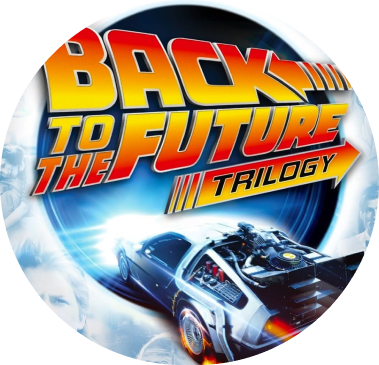

BACK TO THE FUTURE
In this 1980s sci-fi classic, small-town California teen Marty Mc (Michael J. Fox) is thrown back into the '50s when an experiment by his eccentric scientist friend Doc Brown (Christopher Lloyd) goes awry. Traveling through time in a modified DeLorean car, Marty encounters young versions of his parents (Crispin Glover, Lea Thompson), and must make sure that they fall in love or he'll cease to exist. Even more dauntingly, Marty has to return to his own time and save the life of Doc Brown.